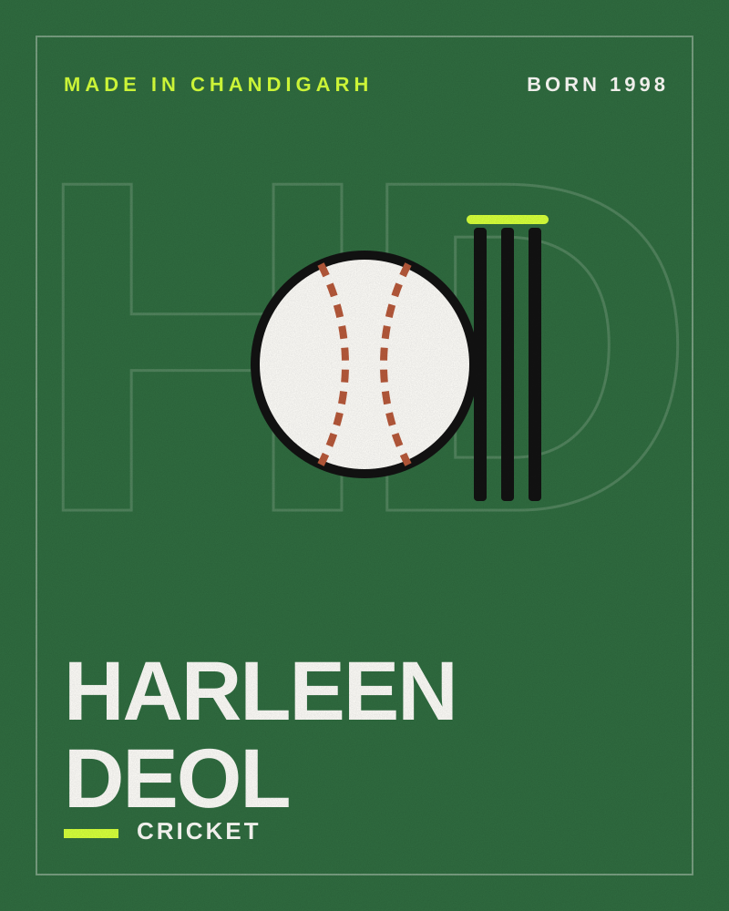

Cricket · Made in Chandigarh
HarleenDeol
Cricketer and 2025 World Cup winner
- Born
- BirthplaceChandigarh, India

- 115maiden ODI century, off 103 balls
- 2025World Cup winner
- 2ndChandigarh woman to play for India
Harleen Deol is a right-handed batter and occasional leg-spinner for India. She was part of the team that won the 2025 Women’s Cricket World Cup, and is remembered for one of the most acrobatic boundary catches in the women’s game.
From the Tricity to India
Harleen made her ODI debut against England in February 2019 at the Wankhede Stadium, becoming the second woman from Chandigarh to play for India. Her T20I debut followed a month later. In domestic cricket she represents Himachal Pradesh.
The catch
In July 2021, fielding at long-off against England, she caught a lofted drive, tossed it back into play as her momentum carried her over the rope, and dived back in to complete the catch. Sachin Tendulkar and Prime Minister Narendra Modi both praised it.
Century and a World Cup
She scored her maiden international century — 115 off 103 balls — against West Indies in December 2024, and was part of the Indian team that won the 2025 Women’s Cricket World Cup.
Timeline
- 1998Born on 21 June
- 2019ODI and T20I debuts for India
- 2021Viral boundary catch against England
- 2022Commonwealth Games squad
- 2023Inaugural Women’s Premier League with Gujarat Giants
- 2024Maiden ODI century vs West Indies
- 2025Wins the Women’s Cricket World Cup with India
Honours
- 2025 Women’s Cricket World Cup (team)
Quick questions
Where was Harleen Deol born?
Harleen Deol was born in Chandigarh, India. Wikidata records Chandigarh as her birthplace, and she was the second woman cricketer from Chandigarh to play for India, after Taniya Bhatia. She went to school at Yadavindra Public School, Mohali.
When was Harleen Deol born?
Harleen Deol was born on 21 June 1998.
What is Harleen Deol known for?
Harleen Deol is known for 2025 World Cup, The 2021 boundary catch and UP Warriorz.
What awards has Harleen Deol received?
Honours include 2025 Women’s Cricket World Cup (team).